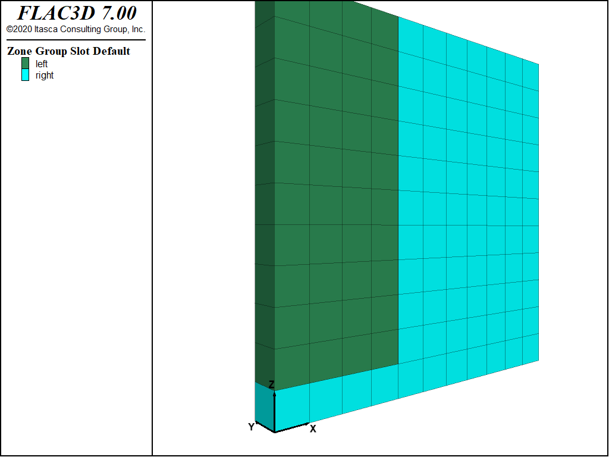
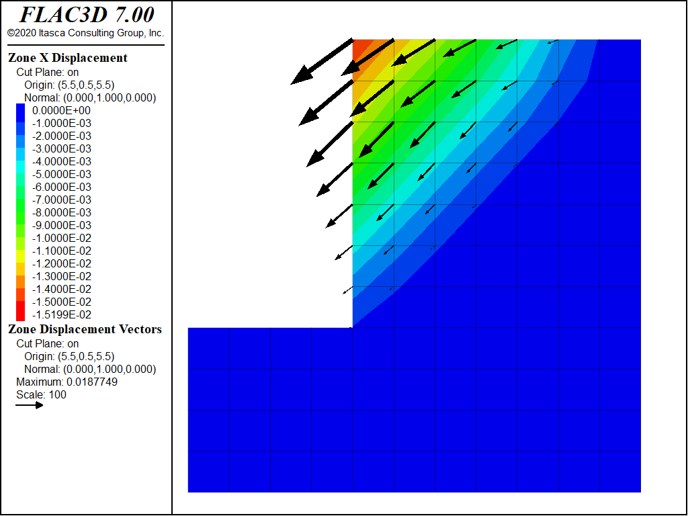

嵌入式挡土墙
问题描述
注意
要在 FLAC3D 中查看此项目，请使用菜单命令 。选择“Structure/Liner/EmbeddedRetainingWall”，然后选择“EmbeddedRetainingWall.f3prj”进行加载。所使用的主数据文件（main data files）显示在本示例末尾。其余数据文件可在项目中找到。
以下示例说明了使用嵌入式衬砌模拟挡土墙（例如板桩墙）。本示例所选的土/墙性质仅用于演示；墙体摩擦与黏着力的实际取值可参见文献（例如 Clayton 等 1993）。
本示例的初始几何如图 1（Figure 1） 所示。
模型使用 zone initialize-stresses 初始化重力荷载引起的应力，并使用 初始化衬砌单元耦合命令（structure liner initialize coupling） 命令初始化衬砌耦合弹簧。请注意，虽然该命令考虑了周围网格单元的应力状态，但还需进行一些循环计算以考虑衬砌的重力重量。
将模型计算至网格中包含嵌入式衬砌的平衡状态。然后使用 单元松弛开挖（zone relax excavate） 命令以不引起虚假拉伸破坏的方式进行开挖，并再次将模型计算至平衡。土体中产生的位移绘制于图 2（Figure 2） 中。墙体中的弯矩分布如图 3（Figure 3） 所示。


图 1：初始几何，显示嵌入网格中的衬砌。


图 2：墙后土体的位移。

图 3：\(M_y\) 弯矩内力。
参考文献
Clayton, C. R. I., J. Milititsky and R. T. Woods. Earth Pressure and Earth-Retaining Structures, pp. 145-148. London: Blackie Academic & Professional (1993).
数据文件
EmbeddedRetainingWall.dat
; 衬砌应用示例：嵌入式挡墙
model new
model large-strain off
model title 'Demonstration of Embedded Liner'
; 创建土体。
zone create brick size 11,1,11 group 'right'
zone cmodel assign mohr-coulomb
zone prop bulk=5e9 shear=1e9 density 2000 cohesion 1e4 friction 30 tension 0
model gravity 10
; 命名区域
zone group 'left' range position-x 0 4 position-z 1 50
zone face group 'Liner' internal ...
range group 'right' group 'left' position-z 1.0 not
; 初始条件
zone initialize-stresses ratio 0.6,0.4
; 边界条件
zone gridpoint fix velocity-x range union position-x=0 position-x=11
zone gridpoint fix velocity-y
zone gridpoint fix velocity-z range position-z=0
; 创建嵌入式衬砌
; （假定 side1 与 side2 的参数相同）
struct liner create by-zone-face separate range group 'Liner'
struct liner property isotropic=( 2e9, 0.25) thickness=1.0 density 2000
struct liner property coupling-stiffness-normal=1e11 ...
coupling-stiffness-shear=1e11 coupling-yield-normal=0.0 ...
coupling-cohesion-shear=0 coupling-cohesion-shear-residual=0 ...
coupling-friction-shear=30.0
struct liner property coupling-stiffness-normal-2=1e11 ...
coupling-stiffness-shear-2=1e11 coupling-yield-normal-2=0.0 ...
coupling-cohesion-shear-2=0 ...
coupling-cohesion-shear-residual-2=0 ...
coupling-friction-shear-2=30.0
struct liner initialize coupling
model save 'Start'
; 求解至平衡
model solve convergence 1
model save 'Initial'
; 开挖
zone relax excavate range position-x 0 4 position-z 4 50
;zone cmodel assign null range position-x 0 4 position-z 4 50
struct liner property slide=on
model solve convergence 0.1
model save 'Weaken'
| 这些内容对您有帮助吗？… 版权与免责声明 |
FLAC3D © 2019, Itasca | 原文更新于 2020 年 10 月 8 日 |